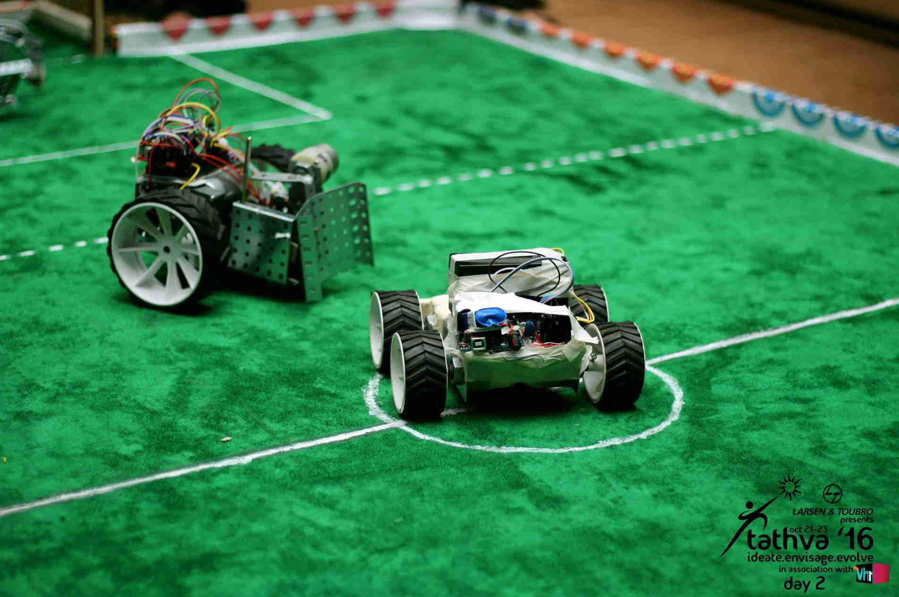
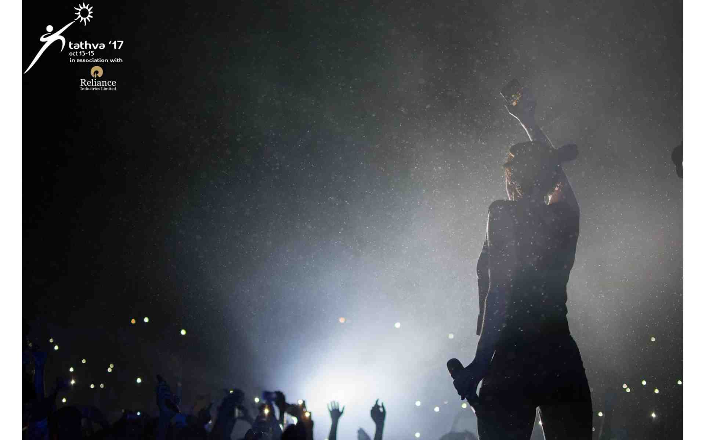
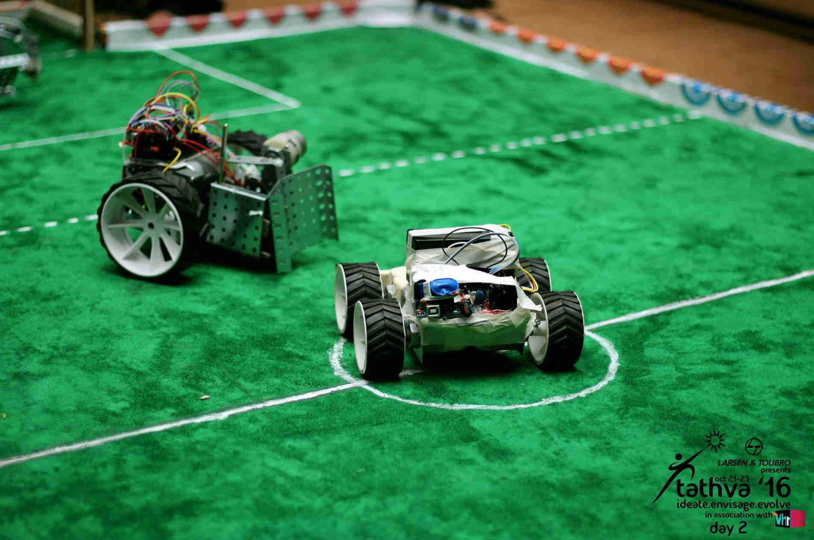
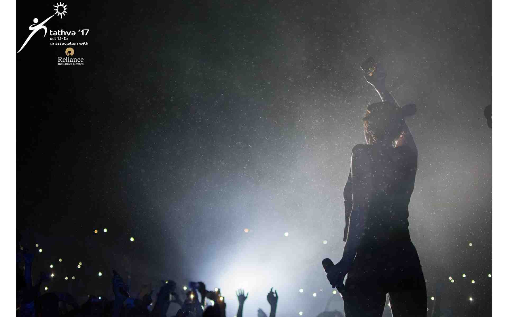

The early years of this century saw some aspiring students garner around in the hope to behold the seeds of ideas that sprouted in their minds take life before them. This resulted in one of south India's biggest scholastic endeavors - Tathva, the techno-management fest of NIT Calicut. Since it's inception in 2000, this annual symposium has known only growth, and has flourished into one of the few promising enterprises the nation has witnessed. Pushing the barriers year after year, Tathva aims at providing a plethora of platforms to the intrigued technical heads that arrive at this fiesta with an array of events and workshops, to sharpen their skills and widen their knowledge quotient. With the engine up and roaring, Tathva'19 is all set to embark on a new expedition, proffering opportunities and paving trails to greater comprehension. From being in awe of the top-notch robotic & automobile display and the adrenaline rush while racing against time and competing with some of the tech-wired geniuses out there, to the ecstatic ambience of the pronites, Tathva has it all covered for it's audience. With Adizya displaying an impressive arena for the art lovers and designing heads, we call out to all the right and left brains alike. Come, embark on this journey with us, and let's drift away from normalcy and let the magic seep into our souls.
WHY SPONSOR US
Tathva, the three day fiesta, attracts tech-wits and creative minds from over 900 colleges across the nation, flowing in to test their capabilities and have an enthralling and fruitful time. Countless heads turn this way during Tathva, hoping to become a part of an endeavor that is nerve-racking and filled with euphoria, all at once.
Being a part of Tathva gives you a chance to associate yourselves with The National Institute of Technology, Calicut ranked 28th national wide, and thereby build an everlasting relationship with the institution, an unavoidable part of Kerala history.
Here's why you should consider investing in Tathva
Provision for maximum publicity through all the social media platforms, having a reach of over 50K
Well executed stalls and kiosks, providing a juncture to exhibit products and display promotional events, for the targeted masses
Maximum promotion of the brand through provision for video advertisements and interactive sessions
Posters making it's way to over 900 colleges across the nation and event posters circulating in Calicut city
And more
Sales of Tathva official t-shirts and other merchandise
Innovative advertising techniques to promote sponsors
.jpg) 


